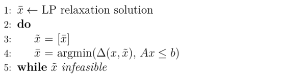

Feasibility Pump¶
The Feasibility Pump is the heuristic is responsible for the idea to this module and therefore the core heuristic of HIPS. First proposed in 2005 by Fischetti et al. [FGL05], the Feasibility Pump aims to compute a feasible solution to an MIP without the need for an initial solution. The heuristic is also described in [Ber06].
Assume we have the following general MIP:
We define the rounding \(\tilde{x}\) of a variable \(x\) as :
We search the point \({x\text{*}}\), the solution to the following LP:
where \(\Delta\) is defined as the \(L_1\)-Norm:
With the terminology introduced, we can now generate two sequences which are the core to the Feasibility Pump. We iteratively compute LP feasible points \(\bar{x}\) and round it to the respective integer feasible points \(\tilde{x}\). Subsequent points \(\bar{x}\) are computed by finding th LP feasible point \({x\text{*}}\) (computed as above) , which minimizes the distance from \(\bar{x}\) to the feasible region of the relaxation. If any of the rounded points \(\tilde{x}\) is feasible, we stop the computation and have found an integer feasible solution.
This computation sequence is expressed by the following pseudo-algorithmic schema.
Obviously a big difficulty of the Feasibility Pump is the chance of entering cylces, when reaching the same \(\tilde{x}\)
twice. This means that the algorithm gets stuck and will never acquire as feasible solution. The easiest way to deal with this problem
is to perturb some of the integer variables in cases a cylce is detected.
The implementation in the Feasibility Pump maintains two types
of cylce detection. The perturbation actions follow the rules described by Fischetti et al. [FGL05].
In case we reach a cycle of length 1 (i.e. \(\tilde{x}^i\) = \(\tilde{x}^{i+1}\)) the algorithm, the T binary variables of the current integer solution \(\tilde{x}\) with highest distance \(|{x\text{*}}_j - \tilde{x}_j|\) are flipped and fixed for the calculation of the next \(\bar{x}\). The number T of variables to flip is uniformally chosen from the range \(( \lfloor \frac{t}{2} \rfloor , \lfloor 1.5t \rfloor )\). The parameter \(t\) can be specified when initializing the Feasibility Pump. By default \(t\) will be assigned with \(\lceil \frac{n}{2} \rceil\), with \(n\) the number of binary variables in the model.
In case a cycle of length \(1 < l \le 3\) is detected we uniformally chose a value \({\rho}_j \in [-0.3, 0.7]\) for each binary variable \(x_j\) with \(j \in I\). We then decide for each of those variables to flip the corresponding \(\tilde{x}_j\) if \(|{x\text{*}}_j - \tilde{x}_j| + max(0, {\rho}_j) > 0.5\).
To ensure that we do not only find any integer feasible solution, but a good one, the implementation addds a constraint, that ensures that the original objective function is still regarded. The parameter \(\alpha\) can be set on initialization of the Feasibility Pump as a value between 0 and 1, denoting how much respect we pay to the original objective function. The higher the \(\alpha\), the more we optimize towards the original objective.